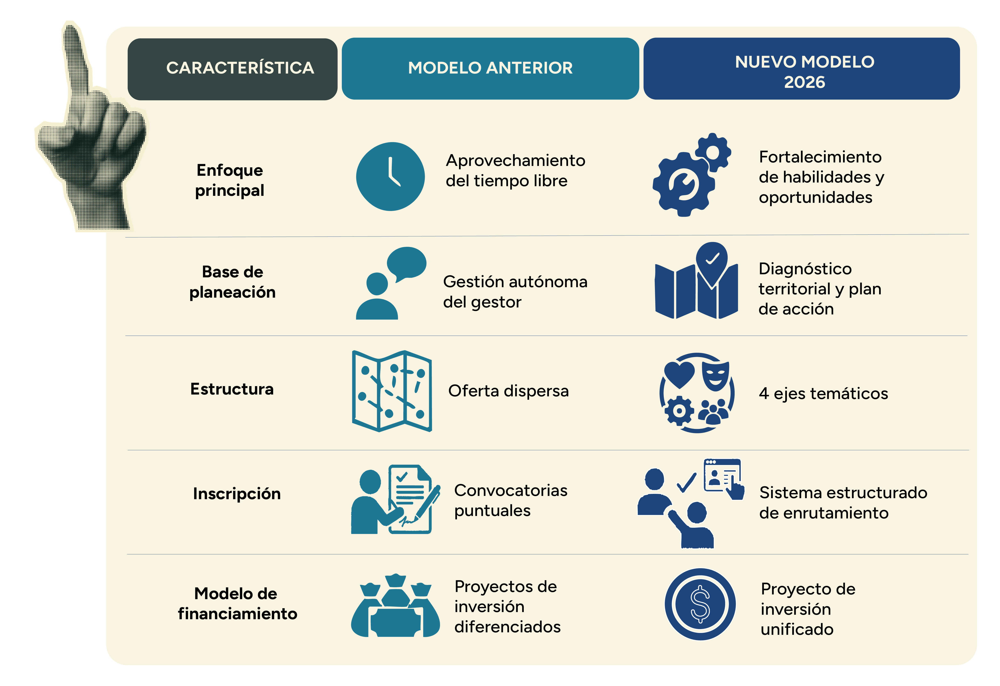
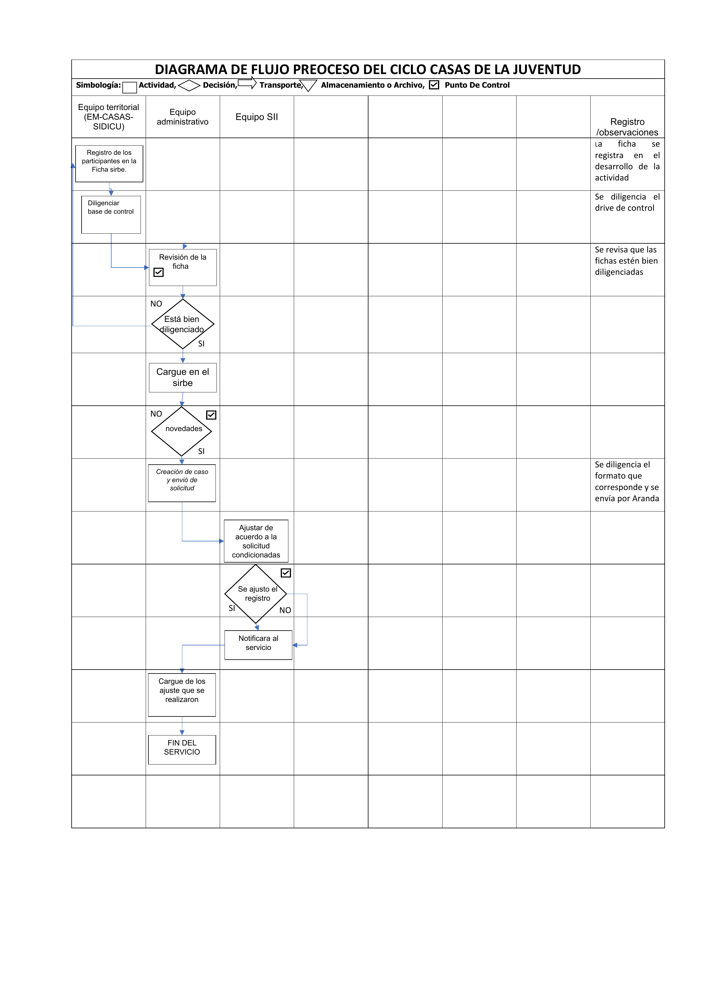

Casas de Juventud
Las Casas de Juventud son espacios distritales dirigidos a jóvenes entre 14 y 28 años, concebidos como el eje territorial de la Política Pública Distrital de Juventud (PPDJ). Articulan la oferta de servicios de la administración distrital para garantizar acceso equitativo a oportunidades de desarrollo personal, social y laboral, y funcionan como la principal puerta de entrada al ecosistema de servicios del Distrito.
Para materializar este propósito y fortalecer los proyectos de vida de los jóvenes, el servicio de Casas de Juventud estructura su oferta integral a través de los siguientes ejes:
Línea de tiempo
Las Casas de Juventud surgieron en el marco de la Política Pública de Juventud 2006–2016 y se han consolidado como la principal puerta de entrada al ecosistema de servicios distritales para jóvenes entre 14 y 28 años.
A tener en cuenta

Consolidación de proyectos de inversión
Durante la administración 2020–2024, la atención a jóvenes operaba a través de dos proyectos de inversión independientes: el 7740 (Generación Jóvenes con Derechos), que abarcaba la oferta general de las Casas de Juventud, y el 7753, un proyecto específico de maternidades y paternidades tempranas que atendía población desde los 10 años. Con el cambio de administración, ambos proyectos se unificaron en un solo proyecto de inversión (el 7940). El componente de maternidades y paternidades dejó de ser un proyecto independiente y pasó a funcionar como una línea de trabajo dentro del eje de bienestar, con atención exclusiva a jóvenes entre 14 y 28 años.
Transformación del servicio
Hasta el 2024, el funcionamiento de las Casas de Juventud se pensaba casi exclusivamente para el “aprovechamiento del tiempo libre” y dependía de la gestión autónoma que lograra cada gestor. A partir de 2025, el servicio se transformó y se estructuró en cuatro ejes temáticos principales: Bienestar, Cultura, Inclusión Productiva y Participación.
Cambio metodológico 2026
Para 2026, el funcionamiento tuvo un cambio metodológico. La planeación de la oferta pasó a ser bimensual y ahora exige obligatoriamente un diagnóstico territorial. Esto significa que los gestores deben realizar análisis de fuentes secundarias, mapeo de actores, recorridos territoriales y cartografía social para crear un plan de acción que cruce las necesidades reales de los jóvenes con las metas de la política pública. Adicionalmente, se estandarizó el tipo de oferta en todas las casas bajo formatos específicos: experiencias, talleres, ciclos formativos, semilleros y laboratorios.
Enrutamiento
Se implementó un nuevo paso llamado “enrutamiento”. Cuando un joven llega a la Casa de Juventud, se le aplica un cuestionario inicial para identificar sus intereses y necesidades puntuales. A partir de allí, se le orienta hacia la oferta institucional adecuada, evitando bombardearlo con información y mejorando su experiencia.
Mínimos operativos y regulación de alianzas
El nivel central ahora establece “mínimos operativos” mensuales por cada eje que todas las localidades deben cumplir, adaptándose a momentos específicos del año (por ejemplo, actividades conmemorativas del 8M o inducción a nuevos consejeros). Asimismo, se le dio orden a la figura del voluntariado; ahora quienes deseen impartir talleres deben llenar un formulario, presentar documentos de seguridad y someter su metodología a revisión técnica.

Equipo
Estructura organizacional de Casas de Juventud.

2. Modalidades del servicio
2.1 Unidades operativas
2.2 Estrategia móvil
3. Equipo transversal
3.1 Administrativo
3.2 Equipo de ejes del servicio (calidad)
Garantizan la calidad técnica del servicio, procesos de formación, diseño de herramientas pedagógicas y ejecución de eventos.
3.3 SIDICU
Tabla de homologación por eje ?
Así se organiza la información de cada eje en SIRBE y en la ficha física. Fuente: tabla de homologación institucional 2026.
Estructura oficial en SIRBE
Jerarquía de campos en SIRBE
Cada registro en SIRBE tiene estos 5 niveles de desagregación:
| Oferta Casas de Juventud 2026 | Actuación en SIRBE misional | Código Ruta de Oportunidades Juveniles | Nombre de la actividad | Tipo de actividad (ficha física y SIRBE) |
|---|---|---|---|---|
| BIENESTAR | PREVENCIÓN INTEGRAL | 12 | Derechos sexuales y derechos reproductivos | 7. Talleres informativos en prevención (1486 en SIRBE) |
| Prevención de violencias basadas en género | ||||
| Salud mental | 8. Acompañamiento y orientación psicosocial (511 en SIRBE) | |||
| Prevención de consumo de sustancias psicoactivas SPA | 9. Cuidado frente al consumo responsable de SPA (1487 en SIRBE) | |||
| Salas de escucha | 10. Centros de escucha (1485 en SIRBE) |
| Oferta Casas de Juventud 2026 | Actuación en SIRBE misional | Código Ruta de Oportunidades Juveniles | Nombre de la actividad | Tipo de actividad (ficha física y SIRBE) |
|---|---|---|---|---|
| CULTURA | MANEJO ADECUADO DE TIEMPO LIBRE | 10 | Medio ambiente | 13. Formación artística focalizada (1489 en SIRBE) |
| Deportes | ||||
| Artes musicales | ||||
| Artes audiovisuales | ||||
| Artes plásticas | ||||
| Artes escénicas | ||||
| Artes circenses | ||||
| Artes urbanas | ||||
| Gestión cultural | ||||
| Uso de espacios para desarrollo de prácticas artísticas | 11. Aprovechamiento del tiempo libre con énfasis en intereses juveniles (1207 en SIRBE) | |||
| Semana de la juventud | 15. Semana de la juventud (1491 en SIRBE) |
| Oferta Casas de Juventud 2026 | Actuación en SIRBE misional | Código Ruta de Oportunidades Juveniles | Nombre de la actividad | Tipo de actividad (ficha física y SIRBE) |
|---|---|---|---|---|
| INCLUSIÓN SOCIAL Y PRODUCTIVA | FORMACIÓN PARA EL PROYECTO DE VIDA | 8 | Habilidades informáticas / Oferta TIC | 16. Salas TIC para el fortalecimiento de habilidades y capacidades juveniles (1496 en SIRBE) |
| Idiomas | ||||
| Lecto escritura / Matemáticas | ||||
| Empleo | 17. Formación en emprendimiento y empleabilidad (1497 en SIRBE) | |||
| Emprendimiento | ||||
| Fest oportunidades | ||||
| Educación financiera | 18. Orientación socio-ocupacional dirigida a jóvenes (1498 en SIRBE) | |||
| Formación (rutas de modelo de educación flexible) |
| Oferta Casas de Juventud 2026 | Actuación en SIRBE misional | Código Ruta de Oportunidades Juveniles | Nombre de la actividad | Tipo de actividad (ficha física y SIRBE) |
|---|---|---|---|---|
| LIDERAZGO Y PARTICIPACIÓN | Asesoría jurídica y participación | 5 | Asesoría jurídica y participación | 22. Promoción y fortalecimiento de actividades de organización juvenil (1494 en SIRBE) |
| 23. Escenarios de diálogos intergeneracionales y de saberes que fortalezcan la ciudadanía juvenil (1495 en SIRBE) | ||||
| 20. Atención y orientación jurídica a jóvenes (1492 en SIRBE) | ||||
| Política pública de juventud | Política pública de juventud | 3. Socialización de política pública de juventud (1502 en SIRBE) | ||
| 4. Derechos humanos y promoción a la participación (1503 en SIRBE) | ||||
| 5. Comités operativos locales de juventud (1504 en SIRBE) | ||||
| Voluntariado intergeneracional | Voluntariado intergeneracional | 6. Voluntariado intergeneracional (1505 en SIRBE) |
Ubicación
Casas de Juventud en Bogotá.

Directorio
| Casa de Juventud | Localidad | Dirección | Barrio |
|---|---|---|---|
| Antonio Nariño | Antonio Nariño | Cra. 22 # 19-26 Sur | Restrepo |
| Nasqua | Barrios Unidos | Calle 73 # 51 - 27 | 12 de Octubre |
| José Saramago | Bosa | Carrera 82 No 70 A 48 sur | La Palestina |
| Nacho Sánchez | La Candelaria | Cra. 3 Este # 9-58 | Egipto |
| Chapinero | Chapinero | Cll. 65a #1-60 | Juan XXIII |
| Ayelén | Ciudad Bolívar | Cll. 65 a Sur # 17c-30 | Lucero Bajo |
| Paraíso | Ciudad Bolívar | Cra. 27l #71h 46 Sur | El Paraíso |
| Aldea de Pensadores | Engativá | Cll. 70 # 88a-07 | Florida Blanca |
| Huitaca | Fontibón | Cll. 17a #118-25 | El Portal |
| Iwoka | Kennedy | Cra. 78n bis #39-27 Sur | Tequendama |
| Cacma | Los Mártires | Cll. 24 # 27 a-31 | Samper Mendoza |
| Chiguazá | Rafael Uribe Uribe | Cra. 5 A bis A 48P- 84sur | Bosques de Molinos |
| Damawha | San Cristóbal | Cra. 1 Este # 10-48 Sur | La María |
| Diego Felipe Becerra | Suba | Cra. 125 # 132 C-82 | La Gaitana |
| El Frailejón | Usme | Carrera 12 # 76 A - 28 Sur | Santa Librada |
| Casa Provisional de Juventud CDC Asunción | Puente Aranda | Cra. 32a #1h-06 | Asunción |
| Ecoparque | Ciudad Bolívar | Diagonal 73C #57-17 | Sierra Morena |
| Camilo Torres Restrepo | Tunjuelito | Diagonal 47 Sur #53 - 41 | Venecia |
| Usaquén | Usaquén | Calle 155 # 7 - 45 | Barrancas |
Flujo de gestión de la información
Proceso completo desde la ejecución de una actividad hasta el reporte oficial de metas.
1. Ejecución de la actividad
Gestor / aliado externoLa actividad (taller, charla, evento) es ejecutada por el gestor territorial, un aliado externo, voluntario o equipo transversal. Los gestores culturales, por ejemplo, rotan por las localidades dictando talleres específicos de su línea artística.
2. Recolección en campo
Gestor / aliado externoSe diligencia la Ficha SIRBE 328 (FOR-PSS-328), un formato físico único con dos secciones:
- Sección A (“cabezote”): la diligencia el gestor. Registra nombre de la actividad, fecha, horas, lugar, modalidad y tipo de actividad.
- Sección B (listado de asistencia): la llenan los jóvenes participantes. Registran datos sociodemográficos y responden preguntas transversales de política pública (ej: derechos vulnerados, ruta de oportunidades juveniles). Cada joven firma como constancia de participación.
3. Entrega física
AdministrativoLos gestores entregan las fichas físicas y listados al administrativo de la Casa de Juventud. Plazo: días 1 al 20 de cada mes.
4. Digitación en SIRBE
Administrativo / digitadorEl administrativo traduce la ficha física al sistema SIRBE. Plazo: días 20 al 28 del mismo mes.
- Selecciona modalidad y actuación de listas desplegables.
- Digita el nombre del curso en un campo de texto abierto, usando la tabla de homologación como referencia.
- Carga los jóvenes asistentes. El sistema asigna automáticamente el estado “Atendido Curso”.
5. Reporte oficial DADE y desagregación manual
La primera semana del mes siguiente, la DADE (Dirección de Análisis y Diseño Estratégico) emite el reporte oficial consolidado a partir de los datos cargados en el sistema. Debido a que DADE entrega la información de manera general, la líder administrativa debe descargar este reporte y realizar un trabajo manual para desagregar los datos por unidad operativa y por equipo móvil, y así poder evaluar el cumplimiento de las metas internas.

A tener en cuenta
En el reporte de datos es importante entender cómo se diligencia la información. El gestor que registra la ficha y reporta la actividad no siempre es quien la ejecuta. Esto ocurre por tres dinámicas operativas:
- Aliados y voluntarios: parte de la oferta es ejecutada por agentes externos. En estos casos, el gestor asume el acompañamiento logístico y la recolección de datos.
- Gestores transversales: existe un equipo especializado de gestores culturales que rota por las localidades dictando talleres específicos de su línea artística.
- Eventos masivos: en actividades de gran escala pueden participar varios gestores apoyando la logística, y todos terminan registrando fichas a su nombre para el mismo espacio.
Diagrama de flujo del proceso
Representación visual del ciclo de recolección y digitación en SIRBE para las Casas de Juventud.

Resumen general 2025
Tablero oficial: Seguimiento técnico (Power BI)